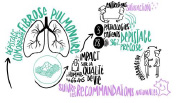
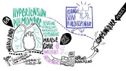

LES FRISES
Durant CANOPI 2023, un facilitateur graphique était présent et a retranscrit graphiquement les moments forts des présentations et les éléments à retenir. Vous trouverez les frises ci-dessous.
Frise de CANOPI 2023
-
-
Le binôme IPA-Pneumologue
-
Les missions transversales de l’IPA : l’enseignement et la recherche
-
La place de l’IPA dans la télésurveillance, le télé-soin et la téléexpertise
-
Enquête sur le rôle d’une IPA dans le télé-suivi de la ventilation mécanique à domicile
-
Le rôle de l’IPA dans les pathologies respiratoires du sommeil
-
 La place de l’IPA dans le dépistage des comorbidités de la fibrose pulmonaire idiopathique
-
 L’IPA dans le suivi des patients présentant une hypertension pulmonaire
-

La prise en charge holistique du patient par l’IPA : focus sur la sexualité du patient BPCO
-

La place de l’IPA dans la réadaptation respiratoire Guillaume Fieutelot
-
Application HEPHAÏ – Aide à l’observance du patient dans la BPCO et l’asthme
-
Cartographie nationale des IPA en pneumologie
LE REMIS

Retrouvez ci-dessous, le remis post-événement résumant l’ensemble des points clés de ces deux journées.


S’UNIR POUR S’ÉLEVER VERS LES SOINS DE DEMAIN
Découvrir l’édition Canopi 2023